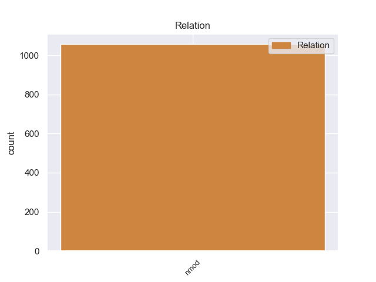
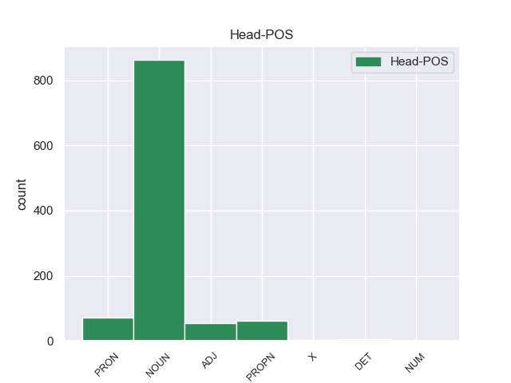
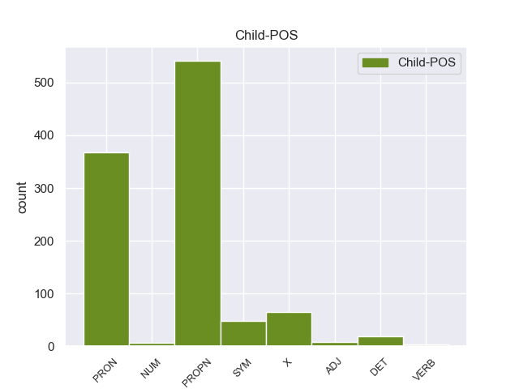

Distribution of features within this leaf



Agreement Rules sorted by frequency.
- When the dependent token is the nominal modifier(nmod) of the head token, and the dependent token is PROPN.
1 De _ _ _ _ 0 _ _ _
2 las _ _ _ _ 0 _ _ _
3 8 _ _ _ _ 0 _ _ _
4 porciones _ _ _ _ 0 _ _ _
5 , _ _ _ _ 0 _ _ _
6 cuatro _ _ _ _ 0 _ _ _
7 correspondieron _ _ _ _ 0 _ _ _
8 a _ _ _ _ 0 _ _ _
9 el _ _ _ _ 0 _ _ _
10 rey _ _ _ _ 0 _ _ _
11 , _ _ _ _ 0 _ _ _
12 una _ _ _ _ 0 _ _ _
13 a _ _ _ _ 0 _ _ _
14 el _ _ _ _ 0 _ _ _
15 conde conde NOUN _ Gender=Masc|Number=Sing 0 _ _ _
16 de _ _ _ _ 0 _ _ _
17 el _ _ _ _ 0 _ _ _
18 Rosellón rosellón PROPN _ Gender=Masc|Number=Sing 15 nmod _ _
19 Nuño _ _ _ _ 0 _ _ _
20 Sánchez _ _ _ _ 0 _ _ _
21 , _ _ _ _ 0 _ _ _
22 una _ _ _ _ 0 _ _ _
23 a _ _ _ _ 0 _ _ _
24 el _ _ _ _ 0 _ _ _
25 obispo _ _ _ _ 0 _ _ _
26 de _ _ _ _ 0 _ _ _
27 Barcelona _ _ _ _ 0 _ _ _
28 Berenguer _ _ _ _ 0 _ _ _
29 de _ _ _ _ 0 _ _ _
30 Palou _ _ _ _ 0 _ _ _
31 , _ _ _ _ 0 _ _ _
32 una _ _ _ _ 0 _ _ _
33 a _ _ _ _ 0 _ _ _
34 el _ _ _ _ 0 _ _ _
35 Conde _ _ _ _ 0 _ _ _
36 de _ _ _ _ 0 _ _ _
37 Ampurias _ _ _ _ 0 _ _ _
38 y _ _ _ _ 0 _ _ _
39 finalmente _ _ _ _ 0 _ _ _
40 otra _ _ _ _ 0 _ _ _
41 a _ _ _ _ 0 _ _ _
42 el _ _ _ _ 0 _ _ _
43 vizconde _ _ _ _ 0 _ _ _
44 de _ _ _ _ 0 _ _ _
45 Bearn _ _ _ _ 0 _ _ _
46 . _ _ _ _ 0 _ _ _
1 A _ _ _ _ 0 _ _ _
2 continuación _ _ _ _ 0 _ _ _
3 , _ _ _ _ 0 _ _ _
4 sonarán _ _ _ _ 0 _ _ _
5 los _ _ _ _ 0 _ _ _
6 ritmos _ _ _ _ 0 _ _ _
7 más _ _ _ _ 0 _ _ _
8 intensos _ _ _ _ 0 _ _ _
9 de _ _ _ _ 0 _ _ _
10 los _ _ _ _ 0 _ _ _
11 llanos _ _ _ _ 0 _ _ _
12 interpretados _ _ _ _ 0 _ _ _
13 por _ _ _ _ 0 _ _ _
14 una _ _ _ _ 0 _ _ _
15 agrupación _ _ _ _ 0 _ _ _
16 que _ _ _ _ 0 _ _ _
17 romperá _ _ _ _ 0 _ _ _
18 esquemas _ _ _ _ 0 _ _ _
19 : _ _ _ _ 0 _ _ _
20 el _ _ _ _ 0 _ _ _
21 Ensamble _ _ _ _ 0 _ _ _
22 de _ _ _ _ 0 _ _ _
23 Arpas _ _ _ _ 0 _ _ _
24 de _ _ _ _ 0 _ _ _
25 la _ _ _ _ 0 _ _ _
26 Orquesta _ _ _ _ 0 _ _ _
27 de _ _ _ _ 0 _ _ _
28 Música _ _ _ _ 0 _ _ _
29 Popular _ _ _ _ 0 _ _ _
30 de _ _ _ _ 0 _ _ _
31 el _ _ _ _ 0 _ _ _
32 Estado _ _ _ _ 0 _ _ _
33 Guárico _ _ _ _ 0 _ _ _
34 , _ _ _ _ 0 _ _ _
35 integrado _ _ _ _ 0 _ _ _
36 por _ _ _ _ 0 _ _ _
37 14 _ _ _ _ 0 _ _ _
38 ejecutantes _ _ _ _ 0 _ _ _
39 , _ _ _ _ 0 _ _ _
40 todos _ _ _ _ 0 _ _ _
41 formados _ _ _ _ 0 _ _ _
42 por _ _ _ _ 0 _ _ _
43 El _ _ _ _ 0 _ _ _
44 Sistema _ _ _ _ 0 _ _ _
45 , _ _ _ _ 0 _ _ _
46 siendo _ _ _ _ 0 _ _ _
47 algunos alguno PRON _ Gender=Masc|Number=Plur|PronType=Ind 0 _ _ _
48 de _ _ _ _ 0 _ _ _
49 ellos él PRON _ Case=Acc,Nom|Gender=Masc|Number=Plur|Person=3|PronType=Prs 47 nmod _ _
50 ganadores _ _ _ _ 0 _ _ _
51 de _ _ _ _ 0 _ _ _
52 el _ _ _ _ 0 _ _ _
53 reconocido _ _ _ _ 0 _ _ _
54 Festival _ _ _ _ 0 _ _ _
55 Internacional _ _ _ _ 0 _ _ _
56 de _ _ _ _ 0 _ _ _
57 Arpas _ _ _ _ 0 _ _ _
58 Infantil _ _ _ _ 0 _ _ _
59 y _ _ _ _ 0 _ _ _
60 Adultos _ _ _ _ 0 _ _ _
61 de _ _ _ _ 0 _ _ _
62 Villavicencio _ _ _ _ 0 _ _ _
63 , _ _ _ _ 0 _ _ _
64 Colombia _ _ _ _ 0 _ _ _
65 . _ _ _ _ 0 _ _ _
1 La _ _ _ _ 0 _ _ _
2 banda _ _ _ _ 0 _ _ _
3 norteamericana _ _ _ _ 0 _ _ _
4 Red _ _ _ _ 0 _ _ _
5 Hot _ _ _ _ 0 _ _ _
6 Chili _ _ _ _ 0 _ _ _
7 Peppers _ _ _ _ 0 _ _ _
8 dejó _ _ _ _ 0 _ _ _
9 boquiabiertas _ _ _ _ 0 _ _ _
10 a _ _ _ _ 0 _ _ _
11 las _ _ _ _ 0 _ _ _
12 18.000 _ _ _ _ 0 _ _ _
13 personas _ _ _ _ 0 _ _ _
14 congregadas _ _ _ _ 0 _ _ _
15 en _ _ _ _ 0 _ _ _
16 el _ _ _ _ 0 _ _ _
17 concierto _ _ _ _ 0 _ _ _
18 que _ _ _ _ 0 _ _ _
19 ofreció _ _ _ _ 0 _ _ _
20 la _ _ _ _ 0 _ _ _
21 noche _ _ _ _ 0 _ _ _
22 de _ _ _ _ 0 _ _ _
23 el _ _ _ _ 0 _ _ _
24 sábado _ _ _ _ 0 _ _ _
25 17 _ _ _ _ 0 _ _ _
26 de _ _ _ _ 0 _ _ _
27 diciembre _ _ _ _ 0 _ _ _
28 en _ _ _ _ 0 _ _ _
29 el _ _ _ _ 0 _ _ _
30 madrileño _ _ _ _ 0 _ _ _
31 Palacio _ _ _ _ 0 _ _ _
32 de _ _ _ _ 0 _ _ _
33 los _ _ _ _ 0 _ _ _
34 Deportes _ _ _ _ 0 _ _ _
35 con _ _ _ _ 0 _ _ _
36 unos _ _ _ _ 0 _ _ _
37 teloneros telonero NOUN _ Gender=Masc|Number=Plur 0 _ _ _
38 de _ _ _ _ 0 _ _ _
39 pro pro X _ Gender=Masc|Number=Sing 37 nmod _ SpaceAfter=No
40 , _ _ _ _ 0 _ _ _
41 lujo _ _ _ _ 0 _ _ _
42 y _ _ _ _ 0 _ _ _
43 exquisitez _ _ _ _ 0 _ _ _
44 interpretativa _ _ _ _ 0 _ _ _
45 : _ _ _ _ 0 _ _ _
46 Foals _ _ _ _ 0 _ _ _
47 . _ _ _ _ 0 _ _ _
1 Inició _ _ _ _ 0 _ _ _
2 entonces _ _ _ _ 0 _ _ _
3 estudios estudio NOUN _ Gender=Masc|Number=Plur 0 _ _ _
4 de _ _ _ _ 0 _ _ _
5 pintura _ _ _ _ 0 _ _ _
6 en _ _ _ _ 0 _ _ _
7 los _ _ _ _ 0 _ _ _
8 talleres _ _ _ _ 0 _ _ _
9 de _ _ _ _ 0 _ _ _
10 Antonio _ _ _ _ 0 _ _ _
11 Cabral _ _ _ _ 0 _ _ _
12 Bejarano _ _ _ _ 0 _ _ _
13 , _ _ _ _ 0 _ _ _
14 y _ _ _ _ 0 _ _ _
15 más _ _ _ _ 0 _ _ _
16 tarde _ _ _ _ 0 _ _ _
17 en _ _ _ _ 0 _ _ _
18 el el DET _ Definite=Def|Gender=Masc|Number=Sing|PronType=Art 3 nmod _ _
19 de _ _ _ _ 0 _ _ _
20 su _ _ _ _ 0 _ _ _
21 tío _ _ _ _ 0 _ _ _
22 paterno _ _ _ _ 0 _ _ _
23 Joaquín _ _ _ _ 0 _ _ _
24 Domínguez _ _ _ _ 0 _ _ _
25 Bécquer _ _ _ _ 0 _ _ _
26 , _ _ _ _ 0 _ _ _
27 que _ _ _ _ 0 _ _ _
28 le _ _ _ _ 0 _ _ _
29 pronosticó _ _ _ _ 0 _ _ _
30 « _ _ _ _ 0 _ _ _
31 Tú _ _ _ _ 0 _ _ _
32 no _ _ _ _ 0 _ _ _
33 serás _ _ _ _ 0 _ _ _
34 nunca _ _ _ _ 0 _ _ _
35 un _ _ _ _ 0 _ _ _
36 buen _ _ _ _ 0 _ _ _
37 pintor _ _ _ _ 0 _ _ _
38 , _ _ _ _ 0 _ _ _
39 sino _ _ _ _ 0 _ _ _
40 un _ _ _ _ 0 _ _ _
41 mal _ _ _ _ 0 _ _ _
42 literato _ _ _ _ 0 _ _ _
43 » _ _ _ _ 0 _ _ _
44 , _ _ _ _ 0 _ _ _
45 aunque _ _ _ _ 0 _ _ _
46 le _ _ _ _ 0 _ _ _
47 estimuló _ _ _ _ 0 _ _ _
48 a _ _ _ _ 0 _ _ _
49 los _ _ _ _ 0 _ _ _
50 estudios _ _ _ _ 0 _ _ _
51 y _ _ _ _ 0 _ _ _
52 le _ _ _ _ 0 _ _ _
53 pagó _ _ _ _ 0 _ _ _
54 los _ _ _ _ 0 _ _ _
55 de _ _ _ _ 0 _ _ _
56 latín _ _ _ _ 0 _ _ _
57 . _ _ _ _ 0 _ _ _
1 Tiene _ _ _ _ 0 _ _ _
2 una _ _ _ _ 0 _ _ _
3 población _ _ _ _ 0 _ _ _
4 de _ _ _ _ 0 _ _ _
5 369 _ _ _ _ 0 _ _ _
6 habitantes _ _ _ _ 0 _ _ _
7 ( _ _ _ _ 0 _ _ _
8 según _ _ _ _ 0 _ _ _
9 censo _ _ _ _ 0 _ _ _
10 de _ _ _ _ 0 _ _ _
11 1999 _ _ _ _ 0 _ _ _
12 ) _ _ _ _ 0 _ _ _
13 y _ _ _ _ 0 _ _ _
14 una _ _ _ _ 0 _ _ _
15 densidad densidad NOUN _ Gender=Fem|Number=Sing 0 _ _ _
16 de _ _ _ _ 0 _ _ _
17 9 _ _ _ _ 0 _ _ _
18 h h SYM _ Gender=Fem|Number=Sing 15 nmod _ _
19 / _ _ _ _ 0 _ _ _
20 km _ _ _ _ 0 _ _ _
21 ² _ _ _ _ 0 _ _ _
22 . _ _ _ _ 0 _ _ _
1 Entre _ _ _ _ 0 _ _ _
2 1926 _ _ _ _ 0 _ _ _
3 y _ _ _ _ 0 _ _ _
4 1940 _ _ _ _ 0 _ _ _
5 realizó _ _ _ _ 0 _ _ _
6 una _ _ _ _ 0 _ _ _
7 serie _ _ _ _ 0 _ _ _
8 de _ _ _ _ 0 _ _ _
9 estudios _ _ _ _ 0 _ _ _
10 geológicos _ _ _ _ 0 _ _ _
11 en _ _ _ _ 0 _ _ _
12 Libia _ _ _ _ 0 _ _ _
13 , _ _ _ _ 0 _ _ _
14 convirtiéndo _ _ _ _ 0 _ _ _
15 se _ _ _ _ 0 _ _ _
16 en _ _ _ _ 0 _ _ _
17 uno uno PRON _ Gender=Masc|Number=Sing|PronType=Ind 0 _ _ _
18 de _ _ _ _ 0 _ _ _
19 los _ _ _ _ 0 _ _ _
20 primeros primero ADJ _ Gender=Masc|Number=Plur|NumType=Ord 17 nmod _ _
21 en _ _ _ _ 0 _ _ _
22 encontrar _ _ _ _ 0 _ _ _
23 petróleo _ _ _ _ 0 _ _ _
24 en _ _ _ _ 0 _ _ _
25 este _ _ _ _ 0 _ _ _
26 país _ _ _ _ 0 _ _ _
27 . _ _ _ _ 0 _ _ _
1 Originariamente _ _ _ _ 0 _ _ _
2 se _ _ _ _ 0 _ _ _
3 formó _ _ _ _ 0 _ _ _
4 como _ _ _ _ 0 _ _ _
5 una _ _ _ _ 0 _ _ _
6 zona _ _ _ _ 0 _ _ _
7 de _ _ _ _ 0 _ _ _
8 veraneo _ _ _ _ 0 _ _ _
9 para _ _ _ _ 0 _ _ _
10 la _ _ _ _ 0 _ _ _
11 burguesía _ _ _ _ 0 _ _ _
12 palmesana _ _ _ _ 0 _ _ _
13 a _ _ _ _ 0 _ _ _
14 finales _ _ _ _ 0 _ _ _
15 de _ _ _ _ 0 _ _ _
16 el _ _ _ _ 0 _ _ _
17 siglo _ _ _ _ 0 _ _ _
18 XIX _ _ _ _ 0 _ _ _
19 y _ _ _ _ 0 _ _ _
20 principios principio NOUN _ Gender=Masc|Number=Plur 0 _ _ _
21 de _ _ _ _ 0 _ _ _
22 el _ _ _ _ 0 _ _ _
23 XX xx NUM _ Gender=Masc|Number=Sing|NumType=Card 20 nmod _ SpaceAfter=No
24 . _ _ _ _ 0 _ _ _
1 Ante _ _ _ _ 0 _ _ _
2 esta _ _ _ _ 0 _ _ _
3 situación _ _ _ _ 0 _ _ _
4 , _ _ _ _ 0 _ _ _
5 el _ _ _ _ 0 _ _ _
6 español _ _ _ _ 0 _ _ _
7 Jorge _ _ _ _ 0 _ _ _
8 de _ _ _ _ 0 _ _ _
9 Llanza _ _ _ _ 0 _ _ _
10 y _ _ _ _ 0 _ _ _
11 Albert _ _ _ _ 0 _ _ _
12 de _ _ _ _ 0 _ _ _
13 Bobadilla _ _ _ _ 0 _ _ _
14 reclamó _ _ _ _ 0 _ _ _
15 los _ _ _ _ 0 _ _ _
16 derechos derecho NOUN _ Gender=Masc|Number=Plur 0 _ _ _
17 sobre _ _ _ _ 0 _ _ _
18 le _ _ _ _ 0 _ _ _
19 marquesado marquesado VERB _ Gender=Masc|Number=Sing|VerbForm=Part 16 nmod _ _
20 para _ _ _ _ 0 _ _ _
21 repatriar _ _ _ _ 0 _ _ _
22 lo _ _ _ _ 0 _ _ _
23 , _ _ _ _ 0 _ _ _
24 a _ _ _ _ 0 _ _ _
25 pesar _ _ _ _ 0 _ _ _
26 de _ _ _ _ 0 _ _ _
27 pertenecer _ _ _ _ 0 _ _ _
28 a _ _ _ _ 0 _ _ _
29 una _ _ _ _ 0 _ _ _
30 rama _ _ _ _ 0 _ _ _
31 más _ _ _ _ 0 _ _ _
32 distante _ _ _ _ 0 _ _ _
33 que _ _ _ _ 0 _ _ _
34 la _ _ _ _ 0 _ _ _
35 Italia _ _ _ _ 0 _ _ _
36 que _ _ _ _ 0 _ _ _
37 recibía _ _ _ _ 0 _ _ _
38 los _ _ _ _ 0 _ _ _
39 derechos _ _ _ _ 0 _ _ _
40 sucesorios _ _ _ _ 0 _ _ _
41 . _ _ _ _ 0 _ _ _
Disagree Examples:
1 Se _ _ _ _ 0 _ _ _
2 inicia _ _ _ _ 0 _ _ _
3 la _ _ _ _ 0 _ _ _
4 construcción _ _ _ _ 0 _ _ _
5 de _ _ _ _ 0 _ _ _
6 el _ _ _ _ 0 _ _ _
7 antiguo _ _ _ _ 0 _ _ _
8 templo templo NOUN _ Gender=Masc|Number=Sing 0 _ _ _
9 de _ _ _ _ 0 _ _ _
10 Nuestra _ _ _ _ 0 _ _ _
11 Señora señora PROPN _ Gender=Fem|Number=Sing 8 nmod _ _
12 de _ _ _ _ 0 _ _ _
13 Guadalupe _ _ _ _ 0 _ _ _
14 . _ _ _ _ 0 _ _ _
1 Me _ _ _ _ 0 _ _ _
2 han _ _ _ _ 0 _ _ _
3 robado _ _ _ _ 0 _ _ _
4 la _ _ _ _ 0 _ _ _
5 cartera _ _ _ _ 0 _ _ _
6 con _ _ _ _ 0 _ _ _
7 toda _ _ _ _ 0 _ _ _
8 la _ _ _ _ 0 _ _ _
9 documentación _ _ _ _ 0 _ _ _
10 , _ _ _ _ 0 _ _ _
11 busco _ _ _ _ 0 _ _ _
12 en _ _ _ _ 0 _ _ _
13 la _ _ _ _ 0 _ _ _
14 Web web NOUN _ Gender=Fem|Number=Sing 0 _ _ _
15 de _ _ _ _ 0 _ _ _
16 www.dgt.es www.dgt.es SYM _ Gender=Masc|Number=Plur 14 nmod _ _
17 para _ _ _ _ 0 _ _ _
18 obtener _ _ _ _ 0 _ _ _
19 información _ _ _ _ 0 _ _ _
20 de _ _ _ _ 0 _ _ _
21 como _ _ _ _ 0 _ _ _
22 volver _ _ _ _ 0 _ _ _
23 a _ _ _ _ 0 _ _ _
24 obtener _ _ _ _ 0 _ _ _
25 el _ _ _ _ 0 _ _ _
26 permiso _ _ _ _ 0 _ _ _
27 y _ _ _ _ 0 _ _ _
28 niguna _ _ _ _ 0 _ _ _
29 de _ _ _ _ 0 _ _ _
30 las _ _ _ _ 0 _ _ _
31 opciones _ _ _ _ 0 _ _ _
32 contempla _ _ _ _ 0 _ _ _
33 este _ _ _ _ 0 _ _ _
34 supuesto _ _ _ _ 0 _ _ _
35 o _ _ _ _ 0 _ _ _
36 almenos _ _ _ _ 0 _ _ _
37 no _ _ _ _ 0 _ _ _
38 he _ _ _ _ 0 _ _ _
39 sabido _ _ _ _ 0 _ _ _
40 encontrar _ _ _ _ 0 _ _ _
41 lo _ _ _ _ 0 _ _ _
42 , _ _ _ _ 0 _ _ _
43 llamo _ _ _ _ 0 _ _ _
44 por _ _ _ _ 0 _ _ _
45 telefono _ _ _ _ 0 _ _ _
46 y _ _ _ _ 0 _ _ _
47 NO _ _ _ _ 0 _ _ _
48 RESPONDEN _ _ _ _ 0 _ _ _
49 y _ _ _ _ 0 _ _ _
50 ademas _ _ _ _ 0 _ _ _
51 sale _ _ _ _ 0 _ _ _
52 una _ _ _ _ 0 _ _ _
53 locución _ _ _ _ 0 _ _ _
54 casi _ _ _ _ 0 _ _ _
55 imperceptible _ _ _ _ 0 _ _ _
56 que _ _ _ _ 0 _ _ _
57 te _ _ _ _ 0 _ _ _
58 remiten _ _ _ _ 0 _ _ _
59 a _ _ _ _ 0 _ _ _
60 la _ _ _ _ 0 _ _ _
61 Web _ _ _ _ 0 _ _ _
62 , _ _ _ _ 0 _ _ _
63 un _ _ _ _ 0 _ _ _
64 -10 _ _ _ _ 0 _ _ _
65 por _ _ _ _ 0 _ _ _
66 el _ _ _ _ 0 _ _ _
67 servicio _ _ _ _ 0 _ _ _
68 :-( _ _ _ _ 0 _ _ _
1 El _ _ _ _ 0 _ _ _
2 Inter _ _ _ _ 0 _ _ _
3 de _ _ _ _ 0 _ _ _
4 Milan _ _ _ _ 0 _ _ _
5 , _ _ _ _ 0 _ _ _
6 Juventus _ _ _ _ 0 _ _ _
7 y _ _ _ _ 0 _ _ _
8 la _ _ _ _ 0 _ _ _
9 Roma _ _ _ _ 0 _ _ _
10 son _ _ _ _ 0 _ _ _
11 tres _ _ _ _ 0 _ _ _
12 de _ _ _ _ 0 _ _ _
13 los _ _ _ _ 0 _ _ _
14 clubes _ _ _ _ 0 _ _ _
15 interesados _ _ _ _ 0 _ _ _
16 en _ _ _ _ 0 _ _ _
17 el _ _ _ _ 0 _ _ _
18 fichaje _ _ _ _ 0 _ _ _
19 de _ _ _ _ 0 _ _ _
20 Osvaldo _ _ _ _ 0 _ _ _
21 , _ _ _ _ 0 _ _ _
22 delantero _ _ _ _ 0 _ _ _
23 de _ _ _ _ 0 _ _ _
24 el _ _ _ _ 0 _ _ _
25 Espanyol _ _ _ _ 0 _ _ _
26 que _ _ _ _ 0 _ _ _
27 podría _ _ _ _ 0 _ _ _
28 acabar _ _ _ _ 0 _ _ _
29 jugando _ _ _ _ 0 _ _ _
30 en _ _ _ _ 0 _ _ _
31 Italia _ _ _ _ 0 _ _ _
32 que _ _ _ _ 0 _ _ _
33 es _ _ _ _ 0 _ _ _
34 la _ _ _ _ 0 _ _ _
35 última _ _ _ _ 0 _ _ _
36 interesada interesado ADJ _ Gender=Fem|Number=Sing|VerbForm=Part 0 _ _ _
37 en _ _ _ _ 0 _ _ _
38 uno uno PRON _ Gender=Masc|Number=Sing|PronType=Ind 36 nmod _ _
39 de _ _ _ _ 0 _ _ _
40 los _ _ _ _ 0 _ _ _
41 mejores _ _ _ _ 0 _ _ _
42 delanteros _ _ _ _ 0 _ _ _
43 de _ _ _ _ 0 _ _ _
44 la _ _ _ _ 0 _ _ _
45 Liga _ _ _ _ 0 _ _ _
46 BBVA _ _ _ _ 0 _ _ _
47 debido _ _ _ _ 0 _ _ _
48 a _ _ _ _ 0 _ _ _
49 que _ _ _ _ 0 _ _ _
50 anotó _ _ _ _ 0 _ _ _
51 más _ _ _ _ 0 _ _ _
52 de _ _ _ _ 0 _ _ _
53 14 _ _ _ _ 0 _ _ _
54 goles _ _ _ _ 0 _ _ _
55 en _ _ _ _ 0 _ _ _
56 su _ _ _ _ 0 _ _ _
57 última _ _ _ _ 0 _ _ _
58 temporada _ _ _ _ 0 _ _ _
59 , _ _ _ _ 0 _ _ _
60 la _ _ _ _ 0 _ _ _
61 2011 _ _ _ _ 0 _ _ _
62 / _ _ _ _ 0 _ _ _
63 2012 _ _ _ _ 0 _ _ _
64 . _ _ _ _ 0 _ _ _
1 Tras _ _ _ _ 0 _ _ _
2 una _ _ _ _ 0 _ _ _
3 primera _ _ _ _ 0 _ _ _
4 temporada _ _ _ _ 0 _ _ _
5 bastante _ _ _ _ 0 _ _ _
6 buena _ _ _ _ 0 _ _ _
7 tanto _ _ _ _ 0 _ _ _
8 a _ _ _ _ 0 _ _ _
9 nivel _ _ _ _ 0 _ _ _
10 personal _ _ _ _ 0 _ _ _
11 ( _ _ _ _ 0 _ _ _
12 8 _ _ _ _ 0 _ _ _
13 goles _ _ _ _ 0 _ _ _
14 ) _ _ _ _ 0 _ _ _
15 como _ _ _ _ 0 _ _ _
16 colectivo _ _ _ _ 0 _ _ _
17 ( _ _ _ _ 0 _ _ _
18 12 _ _ _ _ 0 _ _ _
19 ª _ _ _ _ 0 _ _ _
20 posición _ _ _ _ 0 _ _ _
21 ) _ _ _ _ 0 _ _ _
22 , _ _ _ _ 0 _ _ _
23 en _ _ _ _ 0 _ _ _
24 la _ _ _ _ 0 _ _ _
25 segunda segundo ADJ _ Gender=Fem|Number=Sing|NumType=Ord 36 nmod _ _
26 su _ _ _ _ 0 _ _ _
27 rendimiento _ _ _ _ 0 _ _ _
28 ni _ _ _ _ 0 _ _ _
29 el _ _ _ _ 0 _ _ _
30 de _ _ _ _ 0 _ _ _
31 el _ _ _ _ 0 _ _ _
32 equipo _ _ _ _ 0 _ _ _
33 no _ _ _ _ 0 _ _ _
34 fue _ _ _ _ 0 _ _ _
35 el _ _ _ _ 0 _ _ _
36 esperado esperado NOUN _ Gender=Masc|Number=Sing 0 _ _ _
37 y _ _ _ _ 0 _ _ _
38 se _ _ _ _ 0 _ _ _
39 marchaba _ _ _ _ 0 _ _ _
40 a _ _ _ _ 0 _ _ _
41 el _ _ _ _ 0 _ _ _
42 Nàstic _ _ _ _ 0 _ _ _
43 de _ _ _ _ 0 _ _ _
44 Tarragona _ _ _ _ 0 _ _ _
45 en _ _ _ _ 0 _ _ _
46 la _ _ _ _ 0 _ _ _
47 Segunda _ _ _ _ 0 _ _ _
48 División _ _ _ _ 0 _ _ _
49 B _ _ _ _ 0 _ _ _
50 en _ _ _ _ 0 _ _ _
51 el _ _ _ _ 0 _ _ _
52 mercado _ _ _ _ 0 _ _ _
53 de _ _ _ _ 0 _ _ _
54 invierno _ _ _ _ 0 _ _ _
55 , _ _ _ _ 0 _ _ _
56 donde _ _ _ _ 0 _ _ _
57 solo _ _ _ _ 0 _ _ _
58 permanecería _ _ _ _ 0 _ _ _
59 hasta _ _ _ _ 0 _ _ _
60 acabar _ _ _ _ 0 _ _ _
61 dicha _ _ _ _ 0 _ _ _
62 campaña _ _ _ _ 0 _ _ _
63 , _ _ _ _ 0 _ _ _
64 haciendo _ _ _ _ 0 _ _ _
65 muy _ _ _ _ 0 _ _ _
66 buena _ _ _ _ 0 _ _ _
67 temporada _ _ _ _ 0 _ _ _
68 personal _ _ _ _ 0 _ _ _
69 con _ _ _ _ 0 _ _ _
70 9 _ _ _ _ 0 _ _ _
71 goles _ _ _ _ 0 _ _ _
72 pero _ _ _ _ 0 _ _ _
73 floja _ _ _ _ 0 _ _ _
74 colectivamente _ _ _ _ 0 _ _ _
75 . _ _ _ _ 0 _ _ _
1 Este _ _ _ _ 0 _ _ _
2 segundo _ _ _ _ 0 _ _ _
3 controlador _ _ _ _ 0 _ _ _
4 realiza _ _ _ _ 0 _ _ _
5 las _ _ _ _ 0 _ _ _
6 transferencias transferencia NOUN _ Gender=Fem|Number=Plur 0 _ _ _
7 de _ _ _ _ 0 _ _ _
8 16 _ _ _ _ 0 _ _ _
9 bits bit X _ Gender=Masc|Number=Plur 6 nmod _ SpaceAfter=No
10 . _ _ _ _ 0 _ _ _